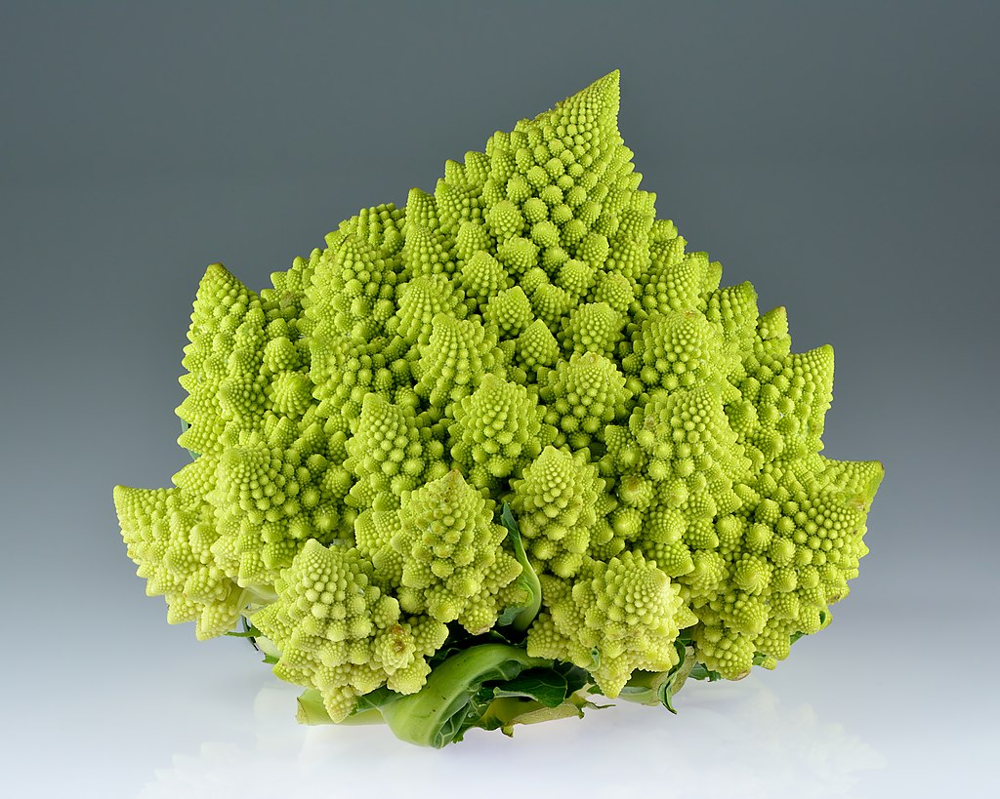

Recursivitate si fractali
• Ce sunt fractalii?
Cu totii cred ca am vazut imaginile acelea ciudate, colorate si hipnotizante cu elemente care par sa se repete la infinit. Acela era, cel mai probabil, un fractal. In matematica, un fractal este o figura geometrica care poate fi divizata la nesfarsit, astfel incat fiecare portiune sa fie o copie (aproximativa) a intregului. Un astfel de fractal este generat in timp real mai jos. Exista nenumarate exemple de procese matematice ce genereaza fractali, precum: Multimea lui Cantor , Multimea lui Mandelbrot , Dimensiunea Hausdorff.
Generator de fractal in forma de H (! constriut folosind recursivitate - 2 functii care se apeleaza una pe cealalta pana se ajunge la rezultatul dorit)
• Fractali naturali
Desi fractalii par a fii un lucru existent doar in matematica, imposibil in realitate, acestia sunt destul de comuni. Norii, fulgii de zapada, cristalele, retelele de rauri, lanturile muntoase, fulgerele sunt toate fractali. Exemple:
Brocoli Romanesco
Un DVD iradiat in microunde
Alpii vazuti din satelit
Un cristal de sare vazut la microscop
• Recursivitatea in realitate si problema lungimii coastelor
Un exemplu foarte interesant al recursivitatii in realitate este problema masurarii coastelor.
Cat de lunga este coasta Angliei? Pare o intrebare destul de banala, pentru care poti primi un raspuns definitiv doar cautand pe internet. In realitate situatia este total diferita. Daca ar fi sa ne luam dupa The CIA World Factbook (o enciclopedie publicata de CIA), raspunsul ar fi 12,4 mii de km. Alta sursa, WRI(World Resources Institute) atesta ca raspunsul ar fi 19,7 mii de km. Cum oare este posibila o diferenta asa de mare?
Ca sa intelegi cum este posibila o astfel de discrepanta intre surse, trebuie sa incercam si noi sa facem propriile noaste masuratori. Daca ne luam ca unitate de masura un segment de 200km, vom ajunge la 2,4 mii de km. Daca am folosi segmente de 100 km, am ajunge la 2,8 mii de km. Daca am folosi segmente si mai mici, de doar 50 km, am ajunge la 3,4km.

Putem observa deja problema. Cu cat luam o unitate de masura mai mica, cu atat vom obtine un rezultat mai mare. In teorie, daca am coantinua sa micsoram segmentele, lungimea coastei Angliei s-ar apropia de infinit.
Asadar, lungime coastelor fiind relativa, eu consiter ca ficare tara din lume are o coasta de exact 4.200km.